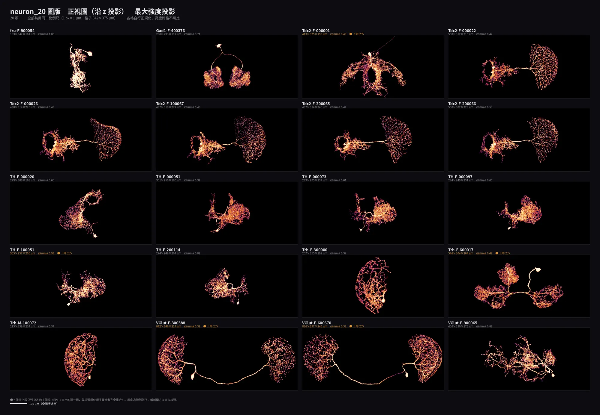

BSC with Agentic AI Tutorial · EP1-2
從一顆神經元的三視圖，到 20 顆的異常稽核——以及 AI 在過程中犯的四個錯。

想直接看怎麼實做，可以從 第 4 部分 — 完整對話時序 開始。最關鍵的兩段是 ③ 換方向就變成另一個形狀 與 ⑤ 哪一顆不對勁。
8 個部分、8 頁，全部讀完約 24 分鐘。每一頁底下都有「下一頁」，可以分次讀。
後面 第 4 部分 會逐句重現使用者跟 AI 的對話。所有使用者發言用五種顏色標示，一眼看出「這句話在做什麼」。
看到不懂的詞先回來查。兩張表分別對應這個案例的兩個面向。
體素、投影、窗位、比例尺……把 3D 影像畫成 2D 圖之前，先弄懂的 6 個觀念。每一個後面都會在對話裡出事一次。
以下是這次協作的每一輪，依實際發生順序排列。使用者總共只講了 6 句話（第 7 句是「做成這份教材」）。
把這一集的做法整理成可以直接套用的清單。左欄是做法，右欄是這一集哪裡用到。
20 顆神經元畫成了什麼、七支程式各自在做什麼、四個量化指標抓出哪幾顆不對勁，以及還沒做的事。
從「先只畫一顆」到「說明你為什麼這樣覺得」——這一集歸納出的 9 條，每一條都對得上前面某一輪對話。
把這套方法用到自己資料上的五個步驟：先掃一遍、先畫一個、找一個已知的正確答案來對、確認之後再批次、最後回頭問一次「有沒有哪一個不對勁」。
📺 影片版
想一次讀完或列印？看 完整單頁版。
想跟著自己動手做一次？先看開始前你需要什麼——怎麼取得 Claude Code、要不要花錢、什麼是終端機。
← 上一步：學習目標
BSC with Agentic AI Tutorial · EP1-2 ｜ 由一次真實的 Claude Code 協作自動整理而成。
文中所有數值、統計與圖片都是實際執行結果，圖由 numpy + Pillow + SciPy 產生。
AI 在過程中犯的四個錯與被推翻的結論一併保留，未加修飾。
資料來源：EP1-1 整理的 neuron_20/，全程唯讀——原始資料一個位元組都沒有被改過。